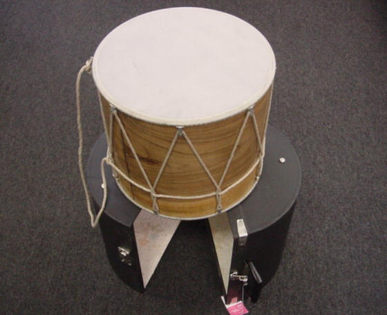
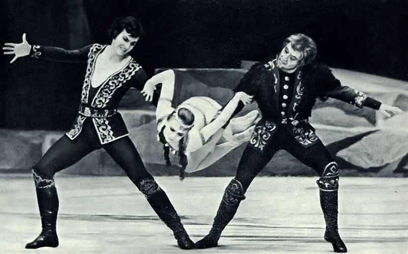
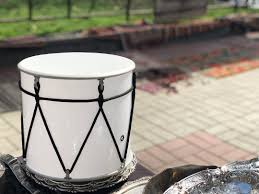
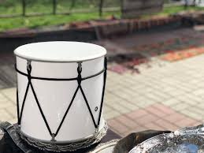
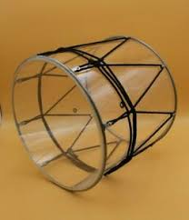
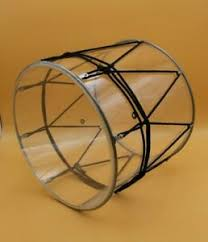

Դհոլ, հայկական հարվածային ազգային երաժշտական գործիք։ Այն պատկանում է երկկողմանի թմբուկների դասին։ Այս գործիքը տարածված է նաև տարբեր ազգերի մոտ և օգտագործվում է երաժշտական համույթներում։ Դհոլը բաղկացած է գլանաձև սնամեջ մարմնից կամ շրջանակից, որի վրա ձգված է կաշվե կամ պլաստիկե մեմբրան։ Մեմբրանի ձգվածության աստիճանով կարգավորվում է ձայնի բարձրությունը։ Դհոլի մարմինը պատրաստվում է փայտից, մետաղից (պողպատ, լատուն և այլն), ակրիլային պլաստիկից, իսկ գլանաձև մարմնի երկու կողմերից ձգվում է այծի կամ հորթի մշակված կաշին։ Դհոլ նվագելու համար պահանջվում են երկու փայտե ձողիկներ (հաստ՝ կոպալ և բարակ՝ ճիպոտ, որոնք պատրաստված են բամբուկից կամ եղեգից։ Ձայնը հնչում է երկու փայտե ձողիկներով կամ մատների ծայրով և ձեռքերի ափերով հարվածելով ձգված կաշվին։ Դհոլը նվագակցում է գրեթե բոլոր երաժշտական գործիքների հետ։ Հիմնականում դհոլի հետ նվագում են զուռնա, դուդուկ և այլ փողային գործիքներ։ Դհոլի մեծ վարպետներից են հայ երաժիշտներ Զիգֆրիդ Զիվա Գաբոյանը, Ռոբերտ Դարունցը, Ջո Զաքարյանը։ Դհոլը տարբեր ժողովուրդների մոտ օգտագործում են երաժշտական համույթներում, տարբեր ծիսակատարությունների և հարսանյաց հանդեսների ժամանակ։
Կա դհոլի՝ 6 տեսակ Դհոլ • Դավուլ • Դափ • Ծնծղա • Թմբուկ • Դարբուկ

Թիֆլիսի հայ երաժիշտներ, ձախ կողմինը նվագում է դհոլով, լուս․՝ մինչև 1900 թվականը
Հայաստանի տարածքում օգտագործվում են հարվածային գործիքների բազմաթիվ տեսակներ ։ Ծիմբալների, դափերի, թմբուկների և այլ հարվածային գործիքների բազմազանությունը հայոց պատմության ընթացքում օգտագործվել է ծեսերի և ծիսական արարողությունների ժամանակ: Պատմական փաստաթղթերում հայտնաբերված հայկական հարվածային գործիքների մասին ամենավաղ հիշատակումները վերաբերում են մ.թ.ա. 3000–2000 թվականներին ։ 2). Հնագույն ծնծղաներ, որոնք թվագրված են մ.թ.ա. մոտ 800 թվականին, հայտնաբերվել են մ.թ.ա ---------------------------------------------------------------------------------------------------------------------------------
Կարմիր բլուր (Կարմիր բլուր) պեղումներ. Նախաքրիստոնեական ծեսերից մնացած մի գործիք՝ մետաղական, զարդարված սկավառակ, եզրերին փոքրիկ զանգերով, որը կոչվում է Կուշովթես, մինչ օրս օգտագործվում է Հայ առաքելական եկեղեցում։ Նկատի ունենալով, որ Հայաստանը քրիստոնեությունը որպես պաշտոնական կրոն ընդունել է 301 թվականին, ակնհայտ է, որ գործիքի տարիքը շատ ավելի վաղ ժամանակներից է։ Ներկայումս Հայաստանում օգտագործվող բազմաթիվ հարվածային գործիքներից ամենաշատ օգտագործվողն ու տարածվածը դյուհոլն է՝ գլանաձև կորպուսով թմբուկը , որը ծածկված է մեկ կամ երկու թաղանթով։ Ե՛վ բալոնը, և՛ գլուխները կարող են պատրաստվել տարբեր նյութերից։ Հին մարդիկ օգտագործում էին կերամիկական, ընկուզենի և պղնձի կեղևով պատված դյուհոլներ: Ընդհանրապես ընդունված է, որ լավագույն դհոլները պատրաստվում են ընկույզից: Այնուամենայնիվ, քանի որ ընկույզի հետ աշխատելը դժվար է և դհոլ պատրաստելիս հակված է ճաքելու, այսօր ավելի լայնորեն օգտագործվում են փայտի և պլաստմասսայի այլ տեսակներ: Այդուհանդերձ, և չնայած իր մեծ քաշին, duhole խաղացողները հիմնականում նախընտրում են ընկույզի դհոլները՝ իրենց հարուստ տեմբրի պատճառով: Թաղանթ(ներ)ը կարող են լինել դհոլի վերևում կամ ներքևի մասում: Եթե դուհոլի երկու կողմերում թաղանթ կա, դրանք պետք է միացված լինեն այնպես, որ գործիքը կարելի է լարել: Նրանք պետք է ձգվեն դհոլի երկու կողմերից անցքից անցք և մի թաղանթից մյուսը զիգզագվող թելով։ Լարը սեղմելը կամ թուլացնելը լարում է գործիքը: Մեմբրանի նյութը կարող է շատ լավ կախված լինել duhole-ի տեսակից:
Դուխոլը կարելի է նվագել ձեռքերով կամ թմբուկով: Թմբուկով նվագած դհոլները կոչվում են կոպալ դհոլներ: (Copal-ը կոնկրետ փայտի անունն է:) Copal . Կախված քոփալի ծագման վայրից, այն կարող է լինել տարբեր ձևերի և չափերի: Որոշ շրջանների գավաթներն ունեն ակումբանման ձևեր, իսկ մյուսները 30-ից մինչև հասարակ ձողիկներ են 40 սանտիմետր երկարություն և 1,5 սանտիմետր տրամագիծ: Անկախ ձևերից և չափերից՝ կոպալները միշտ ունեն նույն կատարողական ֆունկցիան։ Կոպալները օգտագործվում են վերին թաղանթին հարվածելու համար՝ ցածր հնչյուններ արտադրելու և ռիթմիկ օրինաչափության ուժեղ հարվածներն ընդգծելու համար։ Copal duholes-ը կարող է ունենալ տարբեր անուններ, ինչը նույնպես կախված է այն վայրի բարբառից, որտեղից նրանք գալիս են: Օրինակ՝ կոմբալը ( Ղարաբաղի շրջանից), Չոմախը (Բալուի շրջանից) և Տողմաղը (Փոքր Հայքի շրջանից) բոլորը համապարփակ դուհոլների անուններն են։ Tchipot. Մեկ այլ փայտ, որը կոչվում է tchipot, օգտագործվում է հատակին հարվածելու համար թաղանթ. Այն բարակ փայտ է, որը կարող է լինել ծառի ճյուղ՝ 30-40 սմ երկարությամբ: Դրանք սովորաբար պատրաստվում են հոնի կեռասի փայտից կամ ճամփորդող ծառի փայտից, հետևաբար ամուր են և ճկուն: Գոյություն ունեն երկու հիմնական տեսակի tchipot, և դրանք տարբերվում են՝ կախված այն տարածաշրջանից, որտեղից նրանք գալիս են: Մեկը սովորական 30 -ից 40 սմ երկարությամբ ճյուղ է; մյուսը նույն երկարությամբ է, բայց մի ծայրում ունի կաշվե ժապավեն, որի մեջ դրված է մեկ կամ երկու մատ: Նրանք երկուսն էլ նույն գործառույթն ունեն։ Duhol նվագարկչի ձախ ձեռքը ունի բազմաթիվ գործառույթներ: Բացի tchipot-ը պահելուց, այն նաև պահում է duhole-ի հատակը և հավասարակշռում նրա դիրքը:

Կոպալային դհոլների համար փայտերը պահելու եղանակը նման է ռազմական թմբուկներին: Աջ ձեռքը փայտը պահում է ափի մեջ, իսկ հարվածը վերևից իջնում է ներքև: Չիփոթի փայտիկի բռնելը և հարվածելու տեխնիկան տարբեր են և բավականին հետաքրքիր: Այն սովորաբար պահում են բթամատը և ցուցամատը: Այնուամենայնիվ, այն պահվում է նաև ցուցամատով` փայտի ծայրին ամրացված կաշվե ժապավենով: Կաթվածը անցնում է ներքևից վերև: Ի տարբերություն կոպալի, tchipot-ի հարվածները շատ տարբեր տեսակների են: Կան պարզ (ուղիղ) հարվածներ թաղանթին, հարվածներ ամբողջ մակերեսով փայտը, իսկ մամուլը-roll strike. Կոպալ դհոլի բարձր և ցածր ձայները կախված են ոչ միայն կոպալի կամ տչիպոտի տեսակից, այլ նաև թաղանթի տեսակից: Վերին թաղանթները պատրաստվում են հիմնականում ոչխարի կաշվից, իսկ ստորին թաղանթները՝ այծի կաշվից։ Այնուամենայնիվ, այսօրվա դհոլները պատրաստված են կաշվից և նույնիսկ պլաստմասսայից: Կախված այն ֆունկցիայից և շրջաններից, որտեղից նրանք գալիս են, կոպալ դհոլները տարբերվում են չափերով՝ տատանվում են 30-ից 90 սանտիմետր գլանների երկարությամբ: Կոպալային դհոլները, ինչպես մյուս թմբուկները, սովորաբար կատարում են օժանդակ գործառույթ, թեև որոշ հայկական պարերում դրանք կատարում են մենակատար դիրքը. Օրինակ՝ «Բերտ»-ում և «Քոչարի»-ում (երկու հայկական պար) մենակատարը դյուհոլահարն է։ Բացի այդ , նվագարկիչը պարում է այս պարերում: Վերջին շրջանում Հայաստանի քրդաբնակ շրջաններում մեծ տարածում են գտել կոփալային դուխոլները ։ Որոշ հայ կոմպոզիտորներ սիմֆոնիկ նվագախմբերում օգտագործել են կոպալային դյուհոլներ, ինչպես, օրինակ, Էդգար Հովհաննիսյանի «Գայանե» բալետից «Քրդերի պարը»: Ձեռքի դհոլներ. Ձեռքի դհոլները տարբերվում են կոպալային դհոլներից, քանի որ դրանք խաղում են ձեռքերով և ոչ թե փայտերով: Ձեռքի տակդիրների երկարությունը 20-ից 60 սմ է: Հիմնականում պատրաստվում են ընկույզից։ Այնուամենայնիվ, դրանք կարող են պատրաստվել նաև պլաստմասսայից, մետաղից կամ կերամիկայից: Թաղանթ – Գլուխներ Նրանց թաղանթները նույնպես տարբերվում են կոպալ դհոլներից, քանի որ դրանք սովորաբար պատրաստվում են ոչխարի և հորթի կաշվից: Այնուամենայնիվ, ժամանակակից duhole նվագարկիչները օգտագործում են խոզի կաշի, որոշ ձկան կաշի և տարբեր տեսակի պլաստմասսայե կախարդներ, որոնք մեր օրերում դաժանորեն օգտագործվում են մեր դհոլ խաղացողներից շատերի կողմից, քանի որ այն ավելի երկար է տևում, և նրանք, ովքեր կարիք չունեն ամեն պահ կարգավորելու, դա անում են խոնավացնելու կամ տաքացնելու համար: Դյուհոլ խաղացողներ . Դյուհոլի խաղացողները կոչվում են «duholchees», «tumbook-chees» և «tumpkahars»: Ձեռքի դհոլները խաղում են երկուսն էլ կանգնած և նստած. Կանգնած ժամանակ դհոլը պահվում է հատուկ պարանով ուսի շուրջը: Նստած ժամանակ դհոլը դրվում է ձախ ոտքի վրա և հենվում է ձախ արմունկով։ Քանի որ աջ ձեռքը ազատ է, այն կատարում է հիմնական և ուժեղ հարվածները: Ձախ ձեռքը նվագում է նվագակցությունը և օգտագործում է հայկական մատների եզակի տեխնիկա։ Երեք հիմնական տարածքներ ծեծվում են duhole-ի վրա, և տարբեր ձևերով ծեծելը տարբեր ձայներ կարտադրի: Օրինակ, կենտրոնի մոտ արտադրվող ձայնը կոչվում է «աղբանոց»: Հայերենում «թափը» շատ բան է նշանակում՝ ցածր, բարձր ձայն և հիմնական: Ափի կամ մատների կողմից կարող է հնչել «թափի» ձայն : Այն ափի մեջ մատները կարող են դիպչել միմյանց կամ բաժանվել միմյանցից: Ցանկացած մատը կարող է օգտագործվել ի լրումն ցանկացած մատի ծայրի: Մեկ այլ ձայն կոչվում է «զիլ»: «Զիլ»-ը կրկին հայերենում ունի բազմաթիվ իմաստներ՝ լավ, լավ հնչող և բարձրաձայն: «Զիլ» ձայնը ստացվում է ափի կամ մատի (մատների) միջոցով թաղանթի եզրին հարվածելու միջոցով : Մեկ այլ ձայն, որը արտադրվում է, կոչվում է «kut»: Միջին և մատնեմատը սեղմելով՝ դա առաջացնում է: Ինչպես արևելյան երաժշտությունը տարբերվում է շատ առումներով, այնպես էլ տարբերվում են duhole նվագողների ավանդույթները: Հայաստանում կարող եք հանդիպել երաժշտի ստացած ոսկե հուշատախտակներով պատված բազմաթիվ թմբուկների իր երկրպագուներից: Դուք կարող եք հանդիպել նաև արժեքավոր քարերով ծածկված դհոլների , որոնք ցույց են տալիս, թե որքան է երաժիշտը գնահատում իր դհոլը: Հայկական ավանդույթներից մեկն այն է, որ ավագ դհոլ խաղացողները իրենց դյուհոլները տալիս են երիտասարդներին, որպեսզի նրանք շարունակեն ավագի նվագելու ոճը: Դուխոլի հնչյունները. Դուխոլի հնչյունները հավասարվում են հետևյալ երաժշտական օրինակների նոտագրությանը . N). Շատ կոմպոզիտորներ դասական և ժամանակակից երաժշտության մեջ օգտագործել են տարբեր ժողովրդական գործիքներ : Հայ կոմպոզիտորներն օգտագործել են բազմաթիվ ժողովրդական հարվածային գործիքներ. Օրինակ՝ Ալեքսանդր Սպենդարյանը «Երևանյան դիմանկարներում» օգտագործել է դհոլը։ Ավետ Տերտերյանը «թիվ 7 սիմֆոնիայում» «դյուփը» օգտագործել է սիմֆոնիկ նվագախմբի հետ։ Բազմաթիվ ազգությունների կոմպոզիտորները, հատկապես կովկասցիները, իրենց երաժշտության մեջ օգտագործել են ժողովրդական հարվածային գործիքներ։ Իմ կարծիքով, սիմֆոնիկ երաժշտության մեջ այս գործիքների լավագույն օգտագործումը Արամ Խաչատրյանն էր։ «Գայանե» (հաճախ տառադարձվում է «Գայնե») Սուր պարը - առաջին անգամ (Արամ Խաչատրյանի մասնակցությամբ) ներկայացվել է Հայաստանում։ Այս բալետի որոշ հատվածներ հնչել են խաղալով դյուհոլը. Երբ այս բալետը պետք է ներկայացվեր Հայաստանում, Խաչատրյանը ստիպված չեղավ կոնկրետ մանրամասներ հայտնել դուհոլչիին. Այնուամենայնիվ, երբ աշխարհի այլ երկրներ սկսեցին ներկայացնել այս բալետը, անհրաժեշտություն առաջացավ օգտագործել այլ սիմֆոնիկ գործիքներ՝ դյուհոլի կամ դուպեի փոխարեն: Շատ թեստեր են տեղի ունեցել՝ օգտագործելով tomtoms, bongos, timpani և այլն, որպեսզի տեսնեն, թե որն է ամենալավը: Հայաստանում լայն տարածում է գտել առանց թակարդի և թմբկահար թմբուկների կիրառումը։ Խաչատուրյանը սա շատ գոհ էր. Մեկ գործիքի վրա նվագարկվող հատվածի փոխանցման սկզբունքը Մեկ այլ գործիքի համար պարզ է. թմբուկի կամ թմբուկի տեմբրը և մելիզմը (երաժշտական զարդանախշերը) պետք է հնարավորինս նման լինեն դհոլի տեմբրին և մելիզմներին: Երբ «Գայանե» բալետը հնչում էր Հայաստանից դուրս, անհրաժեշտություն եղավ համարժեք ռիթմերին ու հնչյուններին, որոնք նվագում էին դուհոլչիները ։ Քննարկումներ ու վեճեր ծագեցին այս հարցի շուրջ, և, հետևաբար, բազմաթիվ փորձեր տեղի ունեցան։ Հետախուզական նպատակներով նայենք 
«Գայանե» բալետի «Լեզգինկային»։ Լեզգիները մարդիկ են, ովքեր ապրում են Վրաստանի լեռնային շրջաններում և Աֆազիայում։ Շատ կոմպոզիտորներ ունեն գրել է «Լեզգինկա»՝ ներառյալ Իպոլիտով-Իվանովը, Փալիաշվիլին և Էդվարդ Միրզոյանը: Բոլոր նման օրինակներում կոմպոզիտորների ռիթմիկական կառուցվածքը հիմնական ւմ նույնն է։ Իպլիտով-Իբանովը 6/8-ում գրել է «Լեզգինկա» «Իբերիայից» .
Դհոլ բառի բացատրությունը
Դհոլ-դհոլի, [գոյական] (ժողովրդական) Երկու կողմից բարակ կաշի քաշած գլանաձև երաժշտական հարվածային գործիք, թմբուկ:
դհոլ - ռուսերեն թարգմանություն ի (բրբ.) Барабан.
դհոլ - անգլերեն թարգմանություն drum
Դհոլի գույնը կապ չունի լավ որակի հետ կամ հնչողության հետ։
Դհոլի մի քանի օրինակներում
 

 
